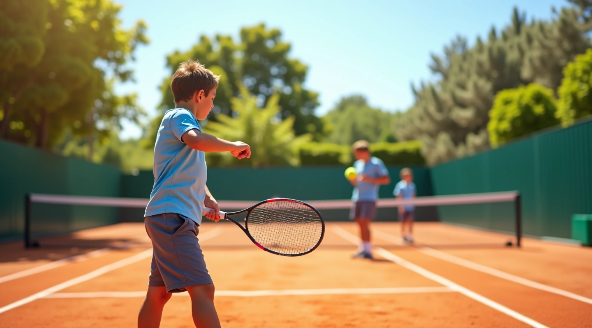
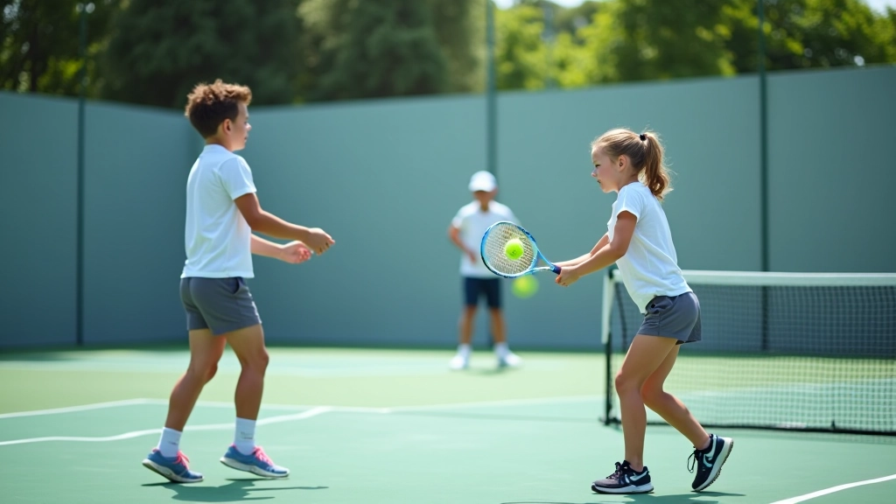
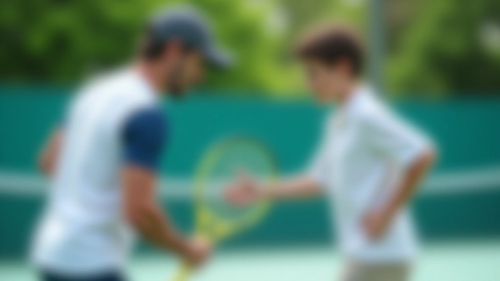

رحلة التدريب المتكاملة للناشئين
نحن نؤمن أن كل طفل يستحق فرصة حقيقية لتطوير مهاراته في التنس. منذ عام 2019، نقدم برامج تدريبية متخصصة تجمع بين الأسس الفنية الصحيحة والتطور الشامل للاعب الصغير. نركز على بناء أساس قوي، وليس فقط على تحسين السرعة أو القوة.

كيف بدأنا ولماذا نحن هنا
الخبرة الحقيقية مع الناشئين علّمتنا أن التدريب الصحيح يبدأ بفهم عميق لاحتياجات كل لاعب
أسسنا أكاديمية النيل للتنس لأننا رأينا فجوة حقيقية. الكثير من البرامج تركز على النتائج السريعة، لكننا اخترنا طريقاً مختلفاً. منذ البداية، كنا نبحث عن مدربين لديهم الصبر والمعرفة، لا مجرد تجار يبيعون أحلاماً. تطورنا ببطء، لكن بثبات. في كل سنة، اكتسبنا خبرات جديدة من الملعب، وليس من الكتب فقط.
اليوم، نعمل مع لاعبين ولاعبات في فئات عمرية مختلفة. كل واحد منهم له قصة. بعضهم دخل المدرسة الرسمية بعد تدريبهم معنا. البعض الآخر اكتشف ببساطة أنه يحب اللعبة. لكن الشيء المشترك؟ كلهم شعروا أن المكان هنا يأخذهم بجدية ويفهم احتياجاتهم الحقيقية.

ما الذي نركز عليه
لا توجد نقاط مختصرة. التدريب الجيد يحتاج لأساس متين ورؤية واضحة
المهارات الأساسية أولاً
نبدأ بالمضرب والقدم والرؤية. الحركة الصحيحة من البداية توفر الكثير من المشاكل لاحقاً. نحن لا نستعجل نحو الضربات المتقدمة حتى يكون الأساس جاهزاً فعلاً.
ذكاء اللعبة
التنس ليس فقط عضلات. إنه قراءة للخصم، اتخاذ قرارات سريعة، فهم الاستراتيجية. نعلم الناشئين كيف يفكرون على الملعب، وليس فقط كيف يركضون.
الحب قبل الفوز
اللاعب الذي يحب اللعبة سيستمر. قد يخسر ويقف. لكن الذي يشعر بالتمتع سيعود للملعب. نبني هذا الحب قبل أي شيء آخر.
كيف نتطور مع كل لاعب
ليس هناك نموذج واحد يناسب الجميع. كل مرحلة لها احتياجاتها الخاصة
الأساسيات (8-10 سنوات)
التعريف بالمضرب والملعب والقواعد. نركز على المتعة واللعب، وليس الأداء. الهدف هنا هو تطوير الحب للعبة والتنسيق الأساسي.
التطوير (11-13 سنة)
هنا نبني المهارات الحقيقية. الضربات الأساسية، الحركة، الاستراتيجية البسيطة. نبدأ المنافسات المودية بين الناشئين.
الاحتراف (14-18 سنة)
تطوير متقدم مع التركيز على القوة والسرعة والذكاء التكتيكي. من يريد، يمكنه التركيز على المنافسات الحقيقية والتحضير لمستويات أعلى.

القيم التي نبني عليها البرامج
ليس فقط عن التنس. إنه عن بناء شخصيات قوية من خلال الرياضة
الصبر والعملية
النتائج تأتي مع الوقت. نحن لا نعد بـ"تحول سحري" في ستة أسابيع. نعد بتحسن تدريجي، بناء على أساس صحيح، وتطور مستقر يدوم.
الاحترام والانضباط
احترام المدرب والملعب والخصم والزملاء. الانضباط ليس معاقبة. إنه الالتزام بالقيام بالأشياء الصحيحة حتى عندما لا تراقبك أحد.
المرونة والتعلم
كل لاعب مختلف. كل مباراة تعلم درس جديد. نحن نتطور باستمرار معهم، ولا نلتزم برؤية واحدة صارمة.
التوازن والصحة
التنس مهم، لكنه ليس كل شيء. نحن نشجع على التوازن بين التدريب والدراسة والحياة الشخصية. لاعب سعيد هو لاعب أفضل.
لماذا يختارنا الآباء والأمهات
نحن لا نعد بنتائج ضمونة أو بطولات محتومة. ما نعده هو شيء أكثر قيمة. نعد بأن كل طفل سيشعر بأنه مسموع، أنه يتطور حقاً، وأنه يستمتع بالعملية. الآباء يختارون أكاديمية النيل لأنهم يرون الفرق. أطفالهم يعودون إلى المنزل متعبين، لكنهم سعداء. يتحدثون عن ما تعلموه، لا عن كم مرة خسروا.
التنس يعلم الصبر والإصرار والتفكير بسرعة. إنه يعلم كيف تتعامل مع الفشل والفوز. إنه يعلم أن النجاح يحتاج وقتاً. هذا ما نركز عليه، وليس فقط على من سيفوز بالمباراة التالية.
في أكاديمية النيل للتنس، نعتقد أن الطفل الذي يتطور مهنياً هو الطفل الذي يشعر بالقيمة والدعم. نحن لا نستخدم الخوف أو الضغط. نستخدم التحفيز الحقيقي، الأهداف الواضحة، والعلاقات المبنية على الثقة. هذا هو الأساس الذي نبني عليه كل برامجنا.
ملاحظة مهمة
المحتوى المقدم على هذا الموقع يهدف إلى تقديم معلومات تعليمية حول برامج التدريب في أكاديمية النيل للتنس. النتائج التي يحققها كل لاعب تعتمد على عوامل متعددة منها الالتزام الشخصي، والخبرة السابقة، والعمر، والتطبيق العملي للتعليمات. نحن نشجع جميع الآباء والأمهات والناشئين على التواصل المباشر معنا للحصول على استشارة شخصية تناسب احتياجات كل لاعب بشكل محدد.